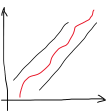

O jogo "Adivinha o número em que estou a pensar"
O jogador é desafiado a adivinhar um número aleatório de 1 a 100, gerado pelo computador. As regras são simples:
• Em cada tentativa o jogador propõe um número;
• O computador responde se esse número é maior ou menor que o número correto;
• De forma iterativa, o jogador vai fazendo tentativas/jogadas até acertar no número, caso em que vence, ou exceder o número máximo de tentativas, perdendo o jogo.
1 Primeira versão do jogo
Comecemos por uma versão simplificada do jogo. A primeira parte do programa consiste em selecionar aleatoriamente o número a adivinhar e, adicionalmente, em ler o número do jogador humano.
Em Python, o código que implementa esta fase de inicialização é o seguinte:
import random
# numero aleatorio a adivinhar
numero = random.randint(1,100)
# ler numero do jogador humano
jogada = int (input("Adivinhe o numero (1 a 100): "))
A função random.randint() seleciona um número inteiro aleatório entre 1 e 100.
A leitura da jogada por parte do jogador humano é realizada através da função input(). Como esta função lê uma cadeia de caracteres, é necessário fazer uma conversão de tipo, neste caso, através da função int() para se obter um número inteiro.
Agora basta verificar se o jogador adivinhou, através de uma estrutura de decisão alternativa:
# verifica se venceu
if numero == jogada:
print ("Parabens!")
else:
print ("Perdeu... Era o numero ", numero)
|
|
Experimente esta primeira versão do jogo. Certamente irá achar demasiado difícil adivinhar o número à primeira! |
2 Iterando através das jogadas - o ciclo de jogo
Certamente achou frustrante jogar este jogo onde só tinha uma oportunidade para adivinhar...
Um bom jogo tem que ser justo e equilibrado. Neste caso, o jogador deve ter um conjunto de tentativas para adivinhar, e se possível algum retorno do computador para que possa elaborar uma estratégia para vencer. Vamos então modificar este jogo para permitir 7 tentativas e indicar ao jogador, caso não tenha adivinhado, se o número a adivinhar é maior ou mais pequeno.
Assim, este jogo não é só "interativo", como é "iterativo"!
|
|
“Um jogo é uma forma de entretenimento interativo onde os jogadores devem superar desafios, tomando ações que são regidas por regras, a fim de atender a uma condição de vitória.” Rollings & Adams “on Game Design”
Para além da interatividade, este jogo tem também uma condição de vitória: acertar no número num número de tentativas não superior ao estabelecido. |
Nesta nova versão do jogo, as jogadas vão-se repetindo enquanto:
• O jogador não acerta no número;
• o número de tentativas não chega a zero
A combinação das duas condições é realizada através de uma conjunção, com o operador lógico and:
jogada != numero and tentativas > 0
Este processo iterativo é implementado através do ciclo condicional – while:
while jogada != numero and tentativas > 0:
Para cada jogada é necessário ler o número escolhido pelo jogador e validar se se esse número está correto, se é maior ou se é menor.
Iremos utilizar uma estrutura de seleção múltipla - um if... elif... else.
if numero == jogada:
print ("Parabens!")
elif jogada > numero:
print ("Numero muito grande...")
tentativas = tentativas - 1
else:
print("Numero muito pequeno...")
tentativas = tentativas -1
• A primeira expressão condicional verifica a condição de vitória - acertar no número.
• A segunda expressão condicional verifica se o jogador falhou por o seu número ser maior do que o número a adivinhar. Em caso afirmativo, escreve uma mensagem ao jogador.
• O último passo da estrutura de decisão indica que o número é muito pequeno.
Em ambos os casos em que o jogador não acerta é feita a redução de uma tentativa.
|
|
Um dos princípios fundacionais dos jogos é proporcionarem resposta (feedback) imediata ao jogador sobre as suas ações. Desta forma, o jogador poderá melhorar a sua jogada na próxima tentativa. Esta é também uma das razões porque os jogos são importantes na aprendizagem. |
|
|
A estrutura de seleção múltipla inclui a condição de vitória e duas condições caso o jogador não acerte... Mas onde se encontra a condição de derrota? |
O ciclo de jogo é a estrutura base de um jogo, que permite realizar várias jogadas até que a condição de vitória seja alcançada... Ou o jogador esgote os seus recursos (jogadas, vidas, energia, etc).
O ciclo de jogo é antecedido pela inicialização do estado do jogo.
import random
# número aleatório a adivinhar e máximo de tentativas possíveis
numero = random.randint(1,100)
tentativas = 7
|
|
Porque foi definido um máximo de 7 tentativas?
A estratégia mais eficaz para jogar este jogo é dividir o intervalo da solução em duas partes e, considerando a resposta ("maior" / "menor"), ir dividindo consecutivamente o intervalo resultante sempre por 2. Seguindo
esta estratégia o número máximo de tentativas pode ser calculado através da
expressão: |
Em Python, o código que implementa o ciclo de jogo é, então, o seguinte:
# ciclo de jogo
jogada = 0 # inicializar a variável
while jogada != numero and tentativas > 0:
jogada = int (input("Adivinhe o numero (1 a 100): "))
tentativas = tentativas - 1
# condição de vitória
if numero == jogada:
print ("Parabens!")
# condição de derrota
elif tentativas == 0:
print ("Perdeu... Era o numero", numero)
# lógica de jogo
elif jogada > numero:
print ("Numero muito grande...")
else:
print("Numero muito pequeno...")
Este código utiliza uma estrutura while para implementar o ciclo de jogo. Esta estrutura repete sempre o seu bloco de código enquanto a expressão condicional for avaliada como verdadeira.
|
|
Experimente esta nova versão do jogo. Certamente irá achar muito mais divertido. |
|
|
Repare que foi necessário inicializar a variável jogada com um valor inicial fora do intervalo de jogo (1 a 100) para que o ciclo de jogo possa sempre ter, pelo menos, uma jogada. O que poderia acontecer se a variável jogada fosse inicializada com um valor entre 1 e 100? |
E para terminar, verifica-se o final do jogo ocorre nas duas primeiras condições da estrutura condicional: por vitória ou por derrota. Quando alguma destas expressões for verdadeira, a condição do ciclo será falsa e o ciclo de jogo terminará logo a seguir...
3 Abstração procedimental - funções
Os jogos, quando bem desenhados e adaptados às capacidades do jogador, conseguem focar toda a sua atenção nos desafios do jogo. A este estado psicológico denomina-se de "fluxo" (em inglês "flow").
|
|
De acordo com o psicólogo Mihaly Csikszentmihalyi, "fluxo" é um estado mental de operação em que a pessoa está totalmente imersa no que está a fazer, caraterizado por um sentimento de total envolvimento e de procura de sucesso no processo da atividade. |
|
 |
À medida que o jogador progride no jogo, ganha competências (aprende) e as tarefas tornam-se mais fáceis. Se o nível de dificuldade não aumentar, o jogador fica aborrecido e deixará de jogar. Mas se a dificuldade for demasiado elevada, o jogador sente-se frustrado e também deixará de jogar. Existe uma faixa estreita que mantém o jogador em estado de "fluxo". O designer de jogos deve ser capaz de parametrizar o nível de dificuldade de forma a adaptar-se às competências do jogador. |
|
O ideal é que o jogo possa ser jogado com outro tipo de intervalo numérico ou outro número máximo de jogadas. Para tal, o ideal será construir uma função, que para além de encapsular o código do jogo, permite a sua parametrização.
Em Python, o código que implementa esta abstração procedimental é o seguinte:
import random
def jogo(tentativas, minimo, maximo):
# numero aleatorio a adivinhar
numero = random.randint(minimo,maximo)
# ciclo de jogo
jogada = 0 # inicializar a variável
while jogada != numero and tentativas > 0:
jogada = int (input("Adivinhe o numero (1 a 100): "))
tentativas = tentativas - 1
# condição de vitória
if numero == jogada:
print ("Parabens!")
# condição de derrota
elif tentativas == 0:
print ("Perdeu... Era o numero", numero)
# lógica de jogo
elif jogada > numero:
print ("Numero muito grande...")
else:
print("Numero muito pequeno...")
Não basta definir uma função para que o seu código seja executado...
|
|
É preciso chamar a função. Por exemplo: jogo(7, 1, 100) Teste esta nova versão do jogo, experimentando gamas de valores diferentes... |
|
|
A principal alteração face à versão anterior foi o encapsulamento na função jogo() através da indentação do código para definir o bloco da função. Que outras alterações foram realizadas? Pista: Observe a definição da função jogo().
|
4 Desafio final
Faça agora o jogo contrário. Desta vez será o computador a tentar adivinhar o número, entre 1 e 100, em que está a pensar... E no máximo em 7 tentativas!
(Opcional) Varie a gama de valores a adivinhar...
|
|
Partilhe o seu jogo!
|